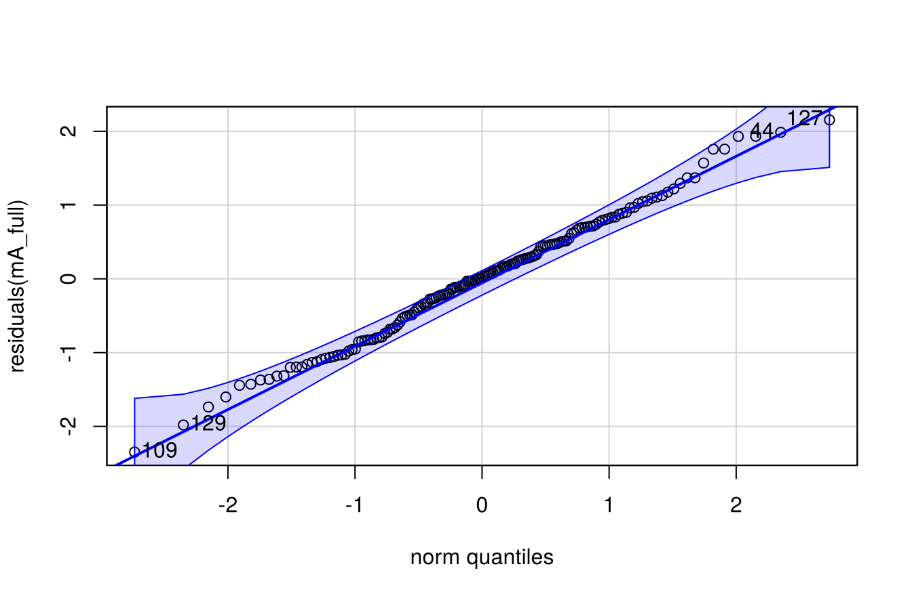
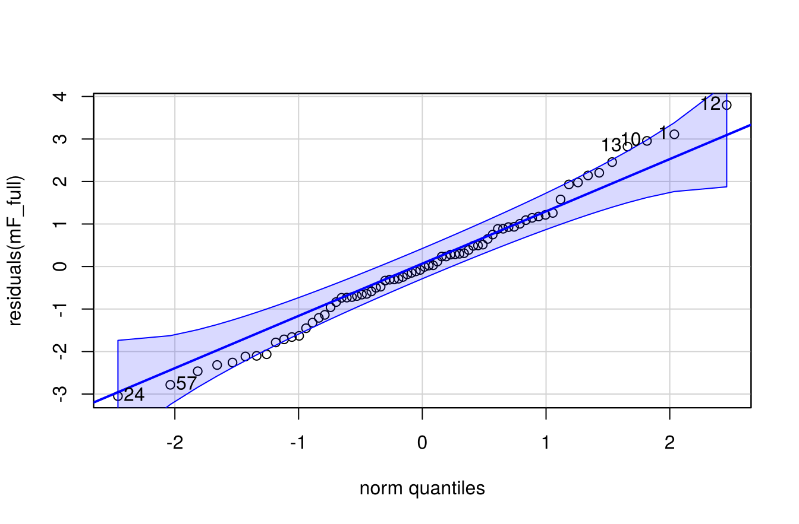
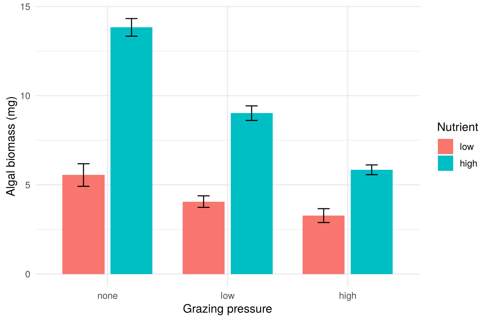

DEF — definition KEY — key idea to remember ↪ — bridge to another lecture ⚠ — common pitfall
Where this chapter fits {#sec-fit}
This appendix is a reference, not a lecture. The recurring idea of this course is that statistics arises when a simple model approximates a complex data-generating process. The response is split into a deterministic component and a residual drawn from an assumed distribution, and the degrees of freedom control how sharply the data can resolve that split. Day 1 introduced these ideas; this appendix works through the full lm workflow for readers who want to see it in detail.
The linear model (lm) is the reference realisation of that idea. It makes one especially convenient assumption about the residual: it is Gaussian, with a single constant variance\(\sigma^2\) that is the same for every observation. Regression, ANOVA, ANCOVA and factorial ANOVA are all the same linear model with different predictors; the workflow to fit and interpret them is identical.
KEY — Regression, ANOVA, ANCOVA and factorial ANOVA are not four different tools. They are one linear model with different mixes of continuous and categorical predictors. The workflow, learned once, transfers.
This chapter walks through that workflow twice, in full, so that it becomes a reusable template:
an ANCOVA — one continuous predictor (a nutrient gradient) and one categorical predictor (light regime), and
a factorial ANOVA — two categorical predictors (nutrient level and grazing pressure) with an interaction.
For each, the same seven steps are followed: inspect and visualise the data, fit the maximal model, run the diagnostics, select among nested models, read the statistics tables, perform the post-hoc analysis with emmeans, and interpret. The emphasis is on reading the output carefully — what each diagnostic plot and each table column actually reports.
Data types and the model formula
Which linear model is being run is decided entirely by the types of the predictors:
Predictors
Common name
R formula
one continuous
simple regression
y ~ x
several continuous
multiple regression
y ~ x1 + x2
one categorical
one-way ANOVA
y ~ A
two+ categorical
factorial ANOVA
y ~ A * B
continuous + categorical
ANCOVA
y ~ x + A
DEF — In an R formula, A * B expands to A + B + A:B: the two main effects plus their interactionA:B. Writing A + B fits an additive model that constrains the interaction to zero.
The response is always continuous here. The residual assumption — Gaussian, constant variance, independent, no outliers — is what makes it a linear model, and it is the first thing the diagnostics check.
Reading model shapes: a visual gallery
Before fitting anything, it is useful to know what the possible answers look like. The plots in this section carry no data; they are drawn directly from chosen coefficients, purely to train the eye. When a real fitted model is later examined, its picture is matched against these canonical shapes to read off which terms matter.
ANCOVA shapes
An ANCOVA fits a line for each level of the factor. Only two things can differ between those lines: their height (the factor or intercept effect) and their slope (the factor × covariate interaction). That gives four canonical outcomes.
Four canonical ANCOVA outcomes, drawn from fixed coefficients (no data). Top-left: slopes differ (interaction). Top-right: parallel lines offset by the factor (main effects, no interaction). Bottom-left: lines coincide (no factor effect). Bottom-right: flat lines offset by the factor (no covariate effect).
The four panels exhaust the possibilities for two lines. In the top-left panel the lines diverge: the covariate effect depends on the group, and the interaction term is required. In the top-right panel the lines are parallel but offset: both main effects are present, the interaction is absent. In the bottom-left panel the lines coincide, so the factor has no effect; in the bottom-right panel the lines are flat, so the covariate has none.
KEY — In an ANCOVA, two questions are posed to the picture in order. Different slopes? → retain the interaction; the covariate effect depends on the group. Same slope but different height? → drop the interaction, retain both main effects. Same line? → the factor has no effect. Flat? → the covariate has no effect.
⚠ When the interaction is present (top-left), the covariate cannot be summarised by a single slope, nor the factor by a single gap — each depends on the other. Only the parallel case (top-right) admits a “one slope, one offset” description.
Factorial ANOVA shapes
A factorial design has no covariate — only cell means — so the natural picture is the interaction plot: cell means joined across one factor, one line per level of the other. Parallel lines mean the factors act additively; non-parallel lines mean they interact.
Four canonical factorial outcomes as interaction plots (no data). Parallel lines (top row and bottom-left) indicate additive effects; only the bottom-right panel, with non-parallel lines, shows an interaction.
In the first three panels the two lines are parallel: the vertical gap between the levels of A is the same at every level of B, so the effects are additive and each can be described separately. Only the bottom-right panel shows non-parallel lines, the signature of an interaction.
KEY — The single most useful habit in factorial ANOVA is to look for parallelism. Parallel lines → additive main effects, interpretable separately. Non-parallel → an interaction, and the main effects can no longer be read on their own. Everything in the worked factorial case below returns to this one visual check.
DEF — Additive (top-right): the vertical gap between the two A lines is the same at every level of B; the effect of A does not depend on B. Interaction (bottom-right): that gap changes across B.
With these shapes in mind, two simulated cases are fitted and their output matched back to this gallery.
Case 1 — ANCOVA: a gradient and a grouping
The question and the data
Leaf nitrogen content (%) is measured on plants along a soil nutrient gradient, in two light regimes (sun versus shade). Three biological questions arise:
Does leaf nitrogen rise with soil nutrients (a slope question)?
Does light regime shift leaf nitrogen up or down (an intercept question)?
And — the question that decides the model — does the nutrient slope itself differ between sun and shade (an interaction question)?
set.seed(42)n <-160nutrient <-runif(n, 0, 10) # soil nutrient indexlight <-factor(sample(c("shade", "sun"), n, replace =TRUE),levels =c("shade", "sun")) # shade = reference level# True process: parallel lines. Sun raises the intercept by ~0.9; the slope# (0.35 % nitrogen per nutrient unit) is the SAME in both light regimes.Slope <-0.35Intercept <- (1.2+0.9* (light =="sun"))mu <- Intercept + Slope * nutrientleaf_N <-rnorm(n, mean = mu, sd =0.9) # constant SD => homoscedasticdatA <-data.frame(leaf_N, nutrient, light, Intercept)head(datA)
The first rows show the four columns of the simulated data frame: the response leaf_N, the covariate nutrient, the factor light, and the true intercept for each observation, retained for reference. The data were generated with parallel lines and a constant residual standard deviation of 0.9; the analysis below should recover both facts.
⚠ The reference level of every factor must be checked, since every categorical coefficient is a contrast against it. Here shade is the reference, so lightsun denotes “sun relative to shade”. It is set deliberately with factor(..., levels = ) or relevel().
Numeric and visual summary
summary(datA[,1:3])
#> leaf_N nutrient light
#> Min. :0.1155 Min. :0.002389 shade:77
#> 1st Qu.:2.5723 1st Qu.:2.824263 sun :83
#> Median :3.6073 Median :5.766484
#> Mean :3.5258 Mean :5.333326
#> 3rd Qu.:4.4215 3rd Qu.:7.673367
#> Max. :7.3610 Max. :9.888917
The response ranges over roughly one order of magnitude, the nutrient index spans its full 0–10 range, and the two light groups are close to balanced. The data are plotted before modelling, because the picture indicates what model to expect.
Leaf nitrogen against the nutrient gradient, coloured by light regime. The two fitted lines appear close to parallel — a visual indication that the interaction is unnecessary.
The two lines are offset — sun above shade — but close to parallel. Matched against the gallery, this is the top-right panel: a light effect on the intercept and a negligible interaction are expected.
KEY — In an ANCOVA plot, two questions are visible directly: do the lines have different heights (a light effect) and different slopes (an interaction)? Here the lines are offset but close to parallel.
Fitting the maximal model
The analysis starts with the most complex model the design justifies — here, one that allows the slopes to differ — and simplifies downward from it.
mA_full <-lm(leaf_N ~ light + nutrient + light:nutrient , data = datA) # light*nutrient as shorthand
DEF — Maximal model: the largest model justified by the design, fitted first. Model selection then removes terms that do not earn their degrees of freedom in explanatory power, yielding a minimal adequate model.
Model diagnostics
The linear model rests on the residual being Gaussian with constant variance, and on no single point dominating the fit. All three conditions are checked.
Residuals against each predictor and against the fitted values. A flat, patternless band supports constant variance.
KEY — Residual plots are read for two features: a trend in the mean (the fitted curve departing from horizontal → the mean structure is wrong, e.g. a missing quadratic term) and a change in spread (a funnel → heteroscedasticity). Neither should be present.
The first panel, against light, shows homogeneity of variance: the two boxplots have the same height and their medians sit close to zero. The second panel, against nutrient, shows a blue curve (a quadratic fit) deviating slightly from the dashed straight line; the deviation is small relative to the spread of the residuals, and the spread itself remains even along the gradient — again homoscedastic. The third panel, against the fitted values, combines the first two and carries the same interpretation as the nutrient panel.
The absence of a spread trend can be confirmed numerically through the correlation between the absolute residuals and the fitted values.
cor(abs(resid(mA_full)), fitted(mA_full))
#> [1] 0.02235455
The correlation is essentially zero: the magnitude of the residuals does not change with the fitted value, which is the numerical statement of constant variance.
Normality of residuals
qqPlot(residuals(mA_full), id =list(n=4))

QQ-plot of studentized residuals against the reference distribution (car::qqPlot). Points on the line indicate approximate normality; the dashed envelope is a pointwise confidence band. Note that residuals(Model_name) must be passed to obtain the residuals; the id argument labels the row numbers of the most extreme observations.
#> [1] 109 127 44 129
The points track the diagonal and remain within the envelope, with no heavy tails or systematic curvature. The four labelled points are merely the most extreme residuals and lie inside the band. A formal test is applied as support.
shapiro.test(resid(mA_full))
#>
#> Shapiro-Wilk normality test
#>
#> data: resid(mA_full)
#> W = 0.99459, p-value = 0.8229
The Shapiro–Wilk statistic is \(W = 0.995\) with \(p = 0.82\): there is no evidence against normality.
⚠ A non-significant Shapiro–Wilk test does not prove normality; it means no evidence against it was found. With small samples the test has little power; with very large samples it flags biologically trivial departures. The QQ-plot is primary and the test is support.
Influential observations
influenceIndexPlot(mA_full, vars =c("Cook", "Studentized", "hat"))
DEF — Leverage (hat-value) measures how unusual a point is in the predictor space; Cook’s distance combines leverage and residual size to measure how much a point actually moves the fit. A point can have high leverage yet low influence if it lies on the trend.
No Cook’s distance approaches the usual thresholds of concern (all are well below 0.5, let alone 1) in the first panel, and no studentized residual is a Bonferroni outlier in the second. The third panel shows the leverage values, none of which stands apart from the rest. The outlierTest formalises the second panel.
outlierTest(mA_full)
#> No Studentized residuals with Bonferroni p < 0.05
#> Largest |rstudent|:
#> rstudent unadjusted p-value Bonferroni p
#> 109 -2.82079 0.0054176 0.86682
The largest studentized residual has a Bonferroni-adjusted \(p > 0.05\), so there is no evidence for any outlier.
A rule of thumb exists for flagging unusually high leverage, analogous to that for Cook’s distance: a hat value greater than 2.5 times the mean hat value.
h <-hatvalues(mA_full)cutoff <-2.5*mean(h) # cutoff for leverage valuewhich(h > cutoff) # indices of high-leverage points
#> named integer(0)
The output named integer(0) indicates that no observation exceeds the cut-off, which is the desired result.
Integration: the diagnostic verdict
The three diagnostic families agree. The residual plots and the near-zero correlation between absolute residuals and fitted values establish constant variance; the QQ-plot and the Shapiro–Wilk test establish approximate normality; the influence plot, the outlier test and the leverage cut-off establish that no single observation drives the fit. All three assumptions of the linear model therefore hold for the maximal model, and model selection and interpretation may proceed on it.
Model selection
Is the interaction needed? The maximal model is compared with the additive model that constrains the slopes to be parallel. Because the models are nested, a partial \(F\)-test is exact.
#> Analysis of Variance Table
#>
#> Model 1: leaf_N ~ light + nutrient
#> Model 2: leaf_N ~ light + nutrient + light:nutrient
#> Res.Df RSS Df Sum of Sq F Pr(>F)
#> 1 157 114.33
#> 2 156 114.31 1 0.0247 0.0337 0.8546
KEY — anova(small, big) on two nested lm objects is a partial\(F\)-test: it asks whether the extra term in the larger model explains significantly more variance than its extra degrees of freedom would by chance. A large \(p\) means “the simpler model is adequate”.
The interaction adds essentially nothing (\(F_{1,156} = 0.03\), \(p = 0.85\)): the extra term reduces the residual sum of squares by only 0.02. It is dropped, as the near-parallel lines in the plot anticipated. AIC provides a second, non-nested criterion.
AIC(mA_full, mA_add,lm(leaf_N ~ nutrient, data = datA),lm(leaf_N ~ light, data = datA))
DEF — \(\mathrm{AIC} = 2k - 2\ln\hat{L}\), with \(k\) the number of parameters and \(\hat L\) the maximised likelihood. It rewards fit and penalises complexity, and unlike the \(F\)-test it can compare non-nested models. A difference of \(\gtrsim 2\) is usually taken as meaningful. Day 6 returns to this.
The additive model has the lowest AIC (408.3 against 410.3 for the interaction model): dropping the interaction improved the penalised fit. Both models far outperform either predictor alone. The additive model is therefore the minimal adequate model, and the \(F\)-test and AIC agree on this conclusion.
Reading the statistics table
summary(mA_add)
#>
#> Call:
#> lm(formula = leaf_N ~ light + nutrient, data = datA)
#>
#> Residuals:
#> Min 1Q Median 3Q Max
#> -2.34871 -0.62571 0.02705 0.52758 2.16964
#>
#> Coefficients:
#> Estimate Std. Error t value Pr(>|t|)
#> (Intercept) 1.30890 0.15860 8.253 5.92e-14 ***
#> lightsun 0.74771 0.13509 5.535 1.28e-07 ***
#> nutrient 0.34294 0.02308 14.856 < 2e-16 ***
#> ---
#> Signif. codes: 0 '***' 0.001 '**' 0.01 '*' 0.05 '.' 0.1 ' ' 1
#>
#> Residual standard error: 0.8534 on 157 degrees of freedom
#> Multiple R-squared: 0.6109, Adjusted R-squared: 0.6059
#> F-statistic: 123.2 on 2 and 157 DF, p-value: < 2.2e-16
This table is the core of the analysis and is read column by column.
KEY — Every coefficient is interpreted holding the other predictors fixed. nutrient is the slope within a light level; lightsun is the gap between light levels at the same nutrient value. That is the purpose of placing them in one model.
(Intercept) = 1.31. The predicted leaf nitrogen for the reference combination: a shade plant at nutrient = 0. It anchors everything else.
lightsun = 0.748 (\(p = 1.3\times10^{-7}\)). At any given nutrient level, a sun plant has about 0.75 % more leaf nitrogen than a shade plant. The positive sign and small \(p\) confirm a clear light effect on the intercept.
nutrient = 0.343 (\(p < 2\times10^{-16}\)). For every one-unit rise in the soil nutrient index, leaf nitrogen rises by about 0.34 %, in both light regimes (the slope is shared because the interaction was dropped). This is the gradient effect, and it is strong.
Std. Error, t value, Pr(>|t|). Each \(t\) is the estimate divided by its standard error; the \(p\)-value tests whether that coefficient differs from zero. Small SEs relative to the estimates give large \(t\) values and small \(p\)-values.
Residual standard error = 0.853 on 157 df. The typical size of a residual, the estimate of \(\sigma\) (close to the 0.9 used in the simulation). Despite R’s label this is a standard deviation of residuals, not a sampling standard error. The 157 df are \(n - 3\): 160 observations minus three estimated parameters (two light-level means and one nutrient slope).
Multiple \(R^2\) = 0.611. The model explains about 61 % of the variance in leaf nitrogen. Adjusted \(R^2\) = 0.606 applies a small-sample penalty and is the appropriate figure to report.
\(F\)-statistic = 123 on 2 and 157 df (\(p < 2.2\times10^{-16}\)). The omnibus test: the model as a whole explains far more than nothing.
The anova() table presents the same fit from the variance-partition side — how the total sum of squares splits across terms.
⚠anova() on one model gives sequential (Type-I) sums of squares — each term is added in order, adjusting only for the terms above it. For an additive model with near-orthogonal predictors this is unproblematic, but with correlated predictors the order matters. For unbalanced or interaction models, marginal (Type-II/III) tests such as car::Anova() are preferred.
Nutrient enters first and captures the largest sum of squares (157.2); light adds a further significant portion (22.3, \(p = 1.3\times10^{-7}\)), matching its coefficient test. The residual mean square, 0.728, is the estimate of \(\sigma^2\), the square of the residual standard error above.
Post-hoc analysis with emmeans
The coefficient table already answers the questions, but emmeans places the answers on the response scale as estimated marginal means — model-based predictions at representative predictor values — which are easier to report and to plot, and which generalise to more complex designs.
DEF — Estimated marginal mean (EMM): the model’s predicted mean for a group, with any continuous covariate held at its average value (here nutrient at its mean, ≈ 5.3). It is the “all else equal” group mean.
# Estimated marginal means for the two light regimes, at the mean nutrient levelemm_light <-emmeans(mA_add, ~ light)emm_light
The two EMMs are about 3.14 % for shade and 3.89 % for sun, each at the average nutrient level, with their standard errors and confidence intervals. These are the group means the model predicts once the covariate has been held constant.
# Pairwise contrast between the light regimespairs(emm_light)
#> contrast estimate SE df t.ratio p.value
#> shade - sun -0.748 0.135 157 -5.535 <.0001
The contrast is 0.75 % — identical, as it must be, to the lightsun coefficient, because in an additive model the light gap is the same at every nutrient value. It is highly significant (\(t = 5.5\), \(p \approx 1.3\times10^{-7}\)).
For the continuous predictor, the analogous tool is emtrends, which reports the slope and can compare slopes across groups.
The two nutrient slopes are 0.343 in each light regime, with identical confidence intervals.
KEY — In the additive model the two nutrient slopes are equal by construction, so their confidence intervals coincide. This is exactly the parallel-lines assumption that was tested and accepted. Had the interaction been retained, emtrends would show two different slopes and allow a test of their difference.
Interpretation and final plot
Taken together: leaf nitrogen rises with soil nutrients at about 0.34 % per unit, identically in sun and shade, and sun plants sit about 0.75 % higher than shade plants at every point along the gradient. There is no evidence that light changes the slope of the relationship, only its height. These are the parameters that were simulated (slope 0.35, offset 0.9, \(\sigma\) 0.9), recovered within their standard errors.
Final additive ANCOVA model: parallel regression lines separated by a constant light effect.
The fitted lines are exactly parallel, since the model contains no interaction; the vertical distance between them is the lightsun coefficient.
Case 2 — Factorial ANOVA: two factors and an interaction
The question and the data
The second case has two categorical predictors. Algae are grown and their biomass (mg) measured under two crossed treatments: nutrient level (low, high) and grazing pressure (none, low, high) — a \(2 \times 3\) factorial design with 12 replicates per cell. The biological expectation is an interaction: grazers suppress algal biomass, but the suppression should be much stronger when nutrients are high and there is more algae to consume.
set.seed(7)design <-expand.grid(rep =1:12,nutrient =c("low", "high"),grazer =c("none", "low", "high"))design$nutrient <-factor(design$nutrient, levels =c("low", "high"))design$grazer <-factor(design$grazer, levels =c("none", "low", "high"))# True cell means with an interaction: at LOW nutrient grazers barely matter;# at HIGH nutrient grazers cut biomass sharply.cell_mean <-function(nut, grz) { base <-5 n_eff <-ifelse(nut =="high", 8, 0) g_eff <-c(none =0, low =-1, high =-2)[as.character(grz)] i_eff <-ifelse(nut =="high",c(none =0, low =-3, high =-6)[as.character(grz)], 0) base + n_eff + g_eff + i_eff}mu <-mapply(cell_mean, design$nutrient, design$grazer)biomass <-rnorm(nrow(design), mean = mu, sd =1.6)datF <-data.frame(biomass, nutrient = design$nutrient, grazer = design$grazer)
DEF — A factorial design crosses every level of one factor with every level of another. Balanced means equal replication in every cell (here 12), which makes the sums of squares independent and the interpretation cleanest.
Visualising the design
For factorial data the key picture is the interaction plot: group means joined across one factor, one line per level of the other. Non-parallel lines signal an interaction.
Interaction plot. Grazing barely lowers biomass at low nutrients but sharply lowers it at high nutrients — the lines are far from parallel, the visual signature of an interaction.
The high-nutrient line falls steeply across the grazing levels while the low-nutrient line is nearly flat. Matched against the factorial gallery, this is the bottom-right panel: a significant nutrient:grazer term is expected.
KEY — Parallel lines → the two factors act additively (their effects sum). Converging, diverging or crossing lines → an interaction: the effect of one factor depends on the level of the other.
Fit and diagnostics
mF_full <-lm(biomass ~ nutrient * grazer, data = datF)
The diagnostics are read in the same way as for the ANCOVA.
Residuals against fitted values for the factorial model. With categorical predictors the residuals cluster at the six fitted cell means; the check is that the spread is similar across clusters.
The residuals form vertical stripes, one per cell, of comparable height: the spread is similar across the six cells, so the constant-variance assumption is supported.
⚠ With only categorical predictors the residual-versus-fitted plot shows vertical stripes, one per cell; this is expected, not a defect. The check is that the stripes have similar height (equal spread across cells, i.e. homoscedasticity), not that they form a cloud.
qqPlot(residuals(mF_full), id =list(n =6))

Normal QQ-plot of the factorial-model residuals.
#> [1] 12 1 24 10 13 57
The QQ-plot is straight and all points, including the six labelled extremes, lie within the envelope.
shapiro.test(resid(mF_full))
#>
#> Shapiro-Wilk normality test
#>
#> data: resid(mF_full)
#> W = 0.98757, p-value = 0.703
Shapiro–Wilk is comfortably non-significant (\(W = 0.99\), \(p = 0.70\)), agreeing with the QQ-plot.
Integration: the diagnostic verdict
The stripes in the residual plot are of comparable height, the QQ-plot is straight, and the formal test finds no evidence against normality. The equal replication (12 per cell) also means that the sum-of-squares subtleties of unbalanced designs do not arise. The assumptions hold, and the ANOVA table can be interpreted.
The ANOVA table and model selection
For a factorial model the anova() table is the primary result: it partitions the variance among the two main effects and their interaction.
KEY — A factorial ANOVA table is read from the bottom up. If the interaction is significant, the main-effect rows above it are not directly interpretable on their own; the effect of each factor must be described within levels of the other (the simple effects), because by definition each depends on the other.
Every row is significant, but the one that governs interpretation is the interaction: nutrient:grazer, \(F_{2,66} = 21.6\), \(p = 6.0\times10^{-8}\). Because it is significant, the full model is retained — the reverse of the ANCOVA decision. The nested test confirms that the interaction earns its two degrees of freedom.
mF_add <-lm(biomass ~ nutrient + grazer, data = datF)anova(mF_add, mF_full)
⚠ In a model with an interaction, grazerlow = −1.49 is not “the effect of low grazing”. It is that effect only at the reference nutrient level (low). The nutrienthigh:grazerlow term (−3.32) states that the grazing effect is a further 3.3 mg more negative when nutrients are high. Main-effect coefficients in an interaction model are always “the effect at the other factor’s reference level”.
Reading the interaction coefficients directly: nutrienthigh:grazerhigh = −5.71 (\(p = 10^{-8}\)) means that moving from no grazing to high grazing costs 5.7 mg more under high nutrients than under low nutrients. The model explains 86 % of the variance (adjusted \(R^2 = 0.85\)). Coefficients relative to a shifting reference are, however, awkward to report — which is exactly what emmeans resolves.
Post-hoc analysis with emmeans: simple effects and contrasts
With a significant interaction, the appropriate post-hoc question is not “what is the overall grazing effect?” but “what is the grazing effect within each nutrient level?” — the simple effects. emmeans expresses this with the | (“by”) operator.
# Estimated marginal mean biomass for every cell of the designemm_cells <-emmeans(mF_full, ~ grazer | nutrient)emm_cells
The output lists six cell means, grouped by nutrient level, with their standard errors and confidence intervals. Within the low-nutrient group the three means are close together; within the high-nutrient group they fall sharply with grazing.
KEY — ~ grazer | nutrient reads as “grazer means, separately within each nutrient level”. This is the natural way to unpack an interaction: six cell means, grouped so that grazing is compared within low- and within high-nutrient conditions.
The pairwise grazing contrasts are computed within each nutrient level and FDR-adjusted for multiple comparisons.
pairs(emm_cells, adjust ="fdr")
#> nutrient = low:
#> contrast estimate SE df t.ratio p.value
#> none - low 1.490 0.617 66 2.414 0.0278
#> none - high 2.274 0.617 66 3.685 0.0014
#> low - high 0.784 0.617 66 1.271 0.2082
#>
#> nutrient = high:
#> contrast estimate SE df t.ratio p.value
#> none - low 4.810 0.617 66 7.795 <.0001
#> none - high 7.988 0.617 66 12.943 <.0001
#> low - high 3.177 0.617 66 5.149 <.0001
#>
#> P value adjustment: fdr method for 3 tests
DEF — Simple effect: the effect of one factor at a fixed level of another. A significant interaction means the simple effects differ across levels — here, the grazing contrasts are small at low nutrients and large at high nutrients.
The contrast that captures the biology is none versus high grazing: about 2.3 mg at low nutrients but about 8.0 mg at high nutrients. Grazing barely reduces biomass when there is little algae to begin with, but removes a large fraction when nutrients drive high production — the interaction, now stated as two concrete, reportable numbers rather than as a coefficient against a moving reference.
The design can equally be sliced the other way — the nutrient effect within each grazing level.
# Nutrient effect within each grazing levelpairs(emmeans(mF_full, ~ nutrient | grazer), adjust ="fdr")
The nutrient effect is large under no grazing and diminishes as grazing intensifies; it is the same interaction viewed from the other factor. emmeans would also provide marginal main effects averaged over the other factor, but with a strong interaction such averages can mislead.
⚠emmeans will report main-effect means averaged over the other factor even when the interaction is significant. Those marginal means average over a relationship that changes; they should be reported only with the interaction explicitly described alongside, or they impose a single number on two different stories.
Interpretation
The two factors do not act independently. High nutrients raise algal biomass substantially; grazing lowers it; but the size of the grazing effect depends on nutrient level — it is minor under low nutrients and large under high nutrients. The correct summary is the set of simple effects, not a single “grazing effect”, because no single grazing effect exists to report.
ggplot(datF, aes(grazer, biomass, fill = nutrient)) +stat_summary(fun = mean, geom ="col", position =position_dodge(0.8), width =0.7) +stat_summary(fun.data = mean_se, geom ="errorbar",position =position_dodge(0.8), width =0.2) +labs(x ="Grazing pressure", y ="Algal biomass (mg)", fill ="Nutrient")

Cell means with standard errors. The widening gap between nutrient levels as grazing increases is the interaction made visible.
The bars show the six cell means; the gap between the nutrient levels narrows from left to right, which is the interaction in its final, reportable form.
Summary and bridge
Both analyses used one workflow: inspect and plot, fit the maximal model, check the residual assumptions, select among nested models, read the tables, and interpret through emmeans. The two cases differed in one decision — whether the interaction survived model selection:
The ANCOVA dropped its interaction (\(p = 0.85\)): parallel lines, a single shared nutrient slope, and a constant light offset. Interpretation consists of the two main-effect coefficients directly.
The factorial ANOVA retained its interaction (\(p = 6\times10^{-8}\)): the grazing effect depends on nutrient level, so interpretation consists of the simple effects within each level, not a single main effect.
KEY — The whole of “which model?” reduces to: fit the maximal model, then ask whether each term earns its degrees of freedom. The interaction test is not a formality; it decides whether main effects or simple effects are reported.
Everything here rested on the residual being Gaussian with constant variance. That pair of assumptions is convenient, and for these two data sets it held. But much biological data violates it: counts are skewed and bounded at zero, proportions are bounded in \([0,1]\), and variance very often grows with the mean. Day 6 shows how a model can use another distribution, through maximum likelihood, with logistic regression as the main example.